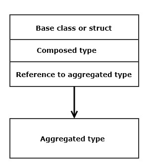

| Definition: Object Model |
Instances:
An instance is a typed memory location initialized with some value.
Objects:
An Object is a pattern for creating instances. If the type is defined by the language we usually
use the term primitive, e.g., int or double. Otherwise we use the term object, e.g., struct, vector.
An Object Model describes:
-
Types:
A type is defined by a memory configuration with specified set of allowed operations.
Examples: integers, floating point numbers, vectors, ...
-
Execution environment:
Defines where objects are hosted, how their values are accessed, how operations on objects are processed,
how errors are handled, and what information about objects are available to programs.
-
Scope:
Program scopes are defined by code blocks enclosed in braces, e.g., '{' and '}'.
They come in two flavors: compile-time only and run-time scopes.
Compile time scopes define names and access priviledges for namespaces, structs,
classes, and enums. They affect what program statements are allowed to compile, but
have no run-time affects.
Run-time scopes are defined by functions, methods, lambdas, and control statements. They have both
compile-time and run-time affects. Whenever a thread of program execution enters a scope,
a new allocation of stack memory, called a stack-frame, is acquired to store local variables
and calling parameters for methods, functions and lambdas. When the thread of execution
leaves that scope the memory is returned to its process for reuse.
-
Object layout:
Primitive types, defined by the language, occupy a contiguous block of memory and may be copied
and assigned. A copy or assignment results in two named memory
locations each with the same value immediately following the operation, subject to cache flushing.
Objects are types defined by the language libraries and by developers. They often occupy two or more
disjoint regions of memory, linked internally by addresses, usually with a control block in static
memory, and data stored in a process heap. Assignment and copy operations on these objects have
semantics defined by each of the languages we consider here, and those are quite different.
-
Object relationships:
-
Instance management:
-
Operations:
|
| Topic |
C# |
C++ |
Rust |
|
Types
|
Value types:
bool, int, char, double, enum, struct, ..
Reference types:
string, class, interface, array, delegate, ..
Collections are reference types:
ArrayList, Hashtable, Stack, Queue, Dictionary, SortedList, ..
|
Primitive types:
bool, int, unsigned int, char, wchar_t, float, double, ..
Aggregate types:
array, struct, class, enum
Collections:
vector, deque, set, map, unordered_set, unordered_map, ..
|
Primitive types:
bool u8, i8, .. u64, i64, f32, f64
Aggregate types:
array, struct, enum
Collections:
Vec, VecDec, HashSet, HashMap, ..
|
|
Execution environment:
|
Common Language Runtime (CLR), a stack-based virtual machine. Runs byte-code.
Manages all reference types
on the heap, including every library and user defined type.
Type resources are eventually garbage collected.
|
Compiles to native code. Provides initialization and termination code that handles its process.
All instances, of any type, may reside in stack, heap, or static memory.
Type resources returned implicitly by
type's destructor (primitive values are discarded with stack frame).
|
Compiles to native code. Provides initialization and termination code that handles its process.
All instances, of any type, may reside in stack or heap memory.
Type resources returned implicitly by drop function
(primitive values are discarded with stack frame).
|
|
Object Relationships:
|
inheritance:
Reference types only.
Base class embedded within memory footprint of derived.
composition:
Only value types, embedded in composer.
aggregateon:
Reference type created at run-time and stored seperately.
using:
Non-owning, given access to used object as reference argument of
users member function.
|
inheritance:
Structs and classes only.
Base class embedded within memory footprint of derived.
composition:
All types, embedded in composer.
aggregateon:
All types, created at run-time and stored seperately.
using:
Non-owning, given access to used object as reference argument of
users member function.
|
inheritance:
Structs may inherit only Traits (similar to an interface).
Traits are usually function declarations without implementation.
composition:
All types, embedded in composer.
aggregateon:
All types, created at run-time and stored seperately.
using:
Non-owning, given access to used object as reference argument of
users member function.
|
|
Object Layout
|
|

|

|
|
Instance management
|
C# CLR creates reference type instances on managed heap. Instances are eventually removed by garbage collection.
Creates exceptions and supports event notification. Provides detailed type information from reflection.
Reference types do not provide value type behavior. Copy and assignment do not result in independent instances.
These operations result in multiple references to the same heap-based object.
C# reference types cannot be value types, but value behavior can be approximated in the following way.
The C# string class has no interface for mutation. To change the character sequence associated with some named
string reference one creates a new string instance with capacity to hold the desired change, and uses the original
string's character sequence to build the new character sequence. Note that this is a new instance, and the
old is readied for garbage collection.
|
C++ supports creation of instances in stack, heap, or static memory. Instance resources are returned when an instance
goes out of scope, by calling its destructor. That always happens when a thread of execution leaves the scope where
and instance was defined.
C++ supports operator overloading for instance management, e.g., copy and move constructors, copy and move assignment operators,
and destructors.
Appropriate definition of these operators enable value behavior, e.g., creation and assignment of instances that are
independent replicas of the source instances.
If bases and members of a class have correct copy, assignment, and destruction semantics, a class does not need
to provide these operators - compiler generated versions work correctly.
These conditions are satisfied if class members are limited to primitive types, strings, and collection types provided by
the standard template library (STL).
|
Rust supports creation of instances in stack or heap memory. Instances are removed by a drop operation
that is implicitly called when a thread of execution leaves the scope in which the instance was defined.
Rust does not support operator overloading, so implict value operation is supported only for primitive types.
For other types copy and assignment results in a move operation which transfers ownership of source
instance's resources to the destination instance and invalidates the source. This is usually a very efficient
operation.
Rust does support clone operations which a program calls explicitly, resulting in an independent replica of the source
instance.
|
|
Operations:
|
All C# operations are processed by the CLR stack-based virtual machine. For example, an add operation
starts by loading the first addend from memory and pushing onto CLR stack. It then loads the second addend and
pushes it on the stack. Then an add operation runs that pops the two arguments and adds them and pushes
the result onto the stack. The operation completes by popping the result and storing in memory.
At a more abstract level, in C#, all operations are methods of a class. A method may be resolved at
compile time and invoked directly, or, if virtual, may be dispatched dynamically via a virtual
function pointer table. If the called method is know at compile-time, C#'s compiler will optimize away
dynamic dispatching, binding directly to the known method.
C# supports definition of lambdas within a member function's code block. Lambdas are compiled into a
class with a method that captures the lambda code block, and, if the code block uses data defined prior to the
lambda definition in the same parent scope, then that data becomes member(s) of the compiler generated class.
|
All C++ operations are processed directly in native code. For example, an add operation loads both arguments
into a register, adds them, and stores the result into the specified location.
C++ operations may be free functions, static functions bound to a class, or member functions with access to
the class's member data.
Non-static member functions may be declared virtual, resulting in the generation
of a virtual function pointer table. That enables, for derived classes, dynamic dispatch where the function
is called via a pointer typed as a pointer to a base. If the base pointer is bound to a derived class instance,
the call resolves to the function defined by the class of that instance.
C++ also supports the definition of lambdas. A lambda is compiled into a class which overloads the operator(),
a method that captures the lambda code block, and, if the code block uses data defined prior to the
lambda definition in the same parent scope, then that data becomes member(s) of the compiler generated class.
|
All Rust operations are processed in native code.
Rust assignment operations and pass by value function calls result, for primitive types, in copy operations.
For non-primitive types these operations result in moves, e.g., transfers of ownership from the source to the
destination. That is efficient, but invalidates the source. To avoid invalidation one may assign or
pass a clone of the source instance.
|